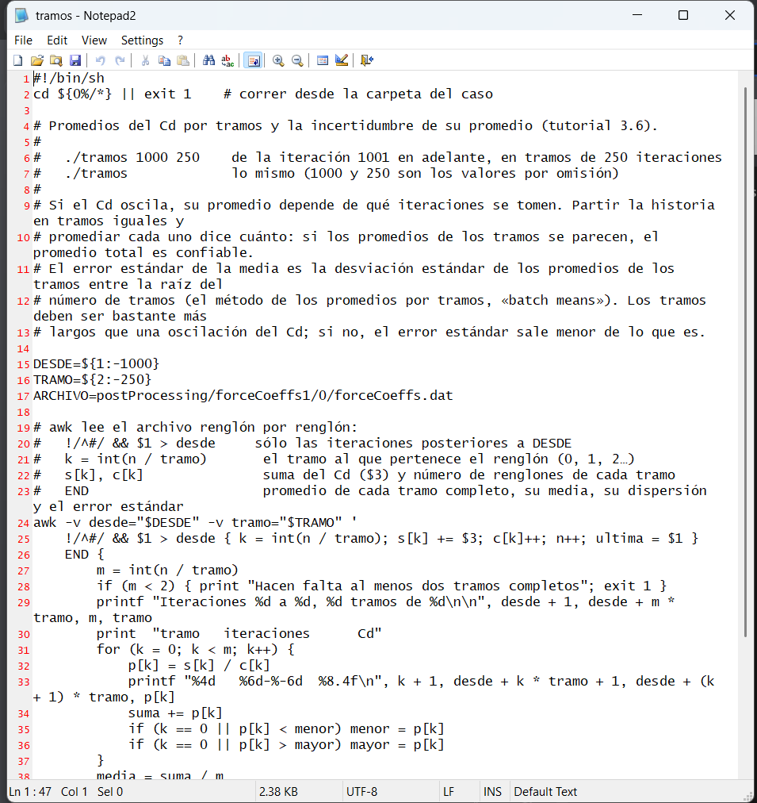
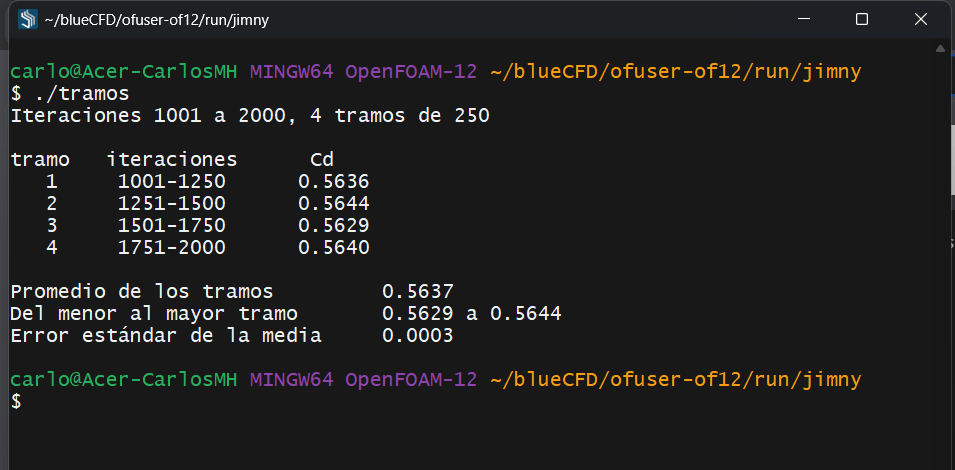
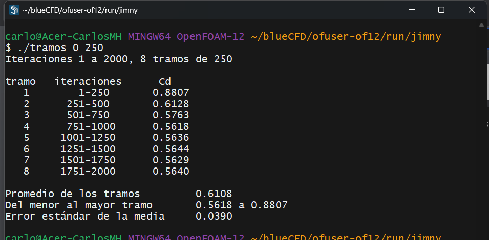
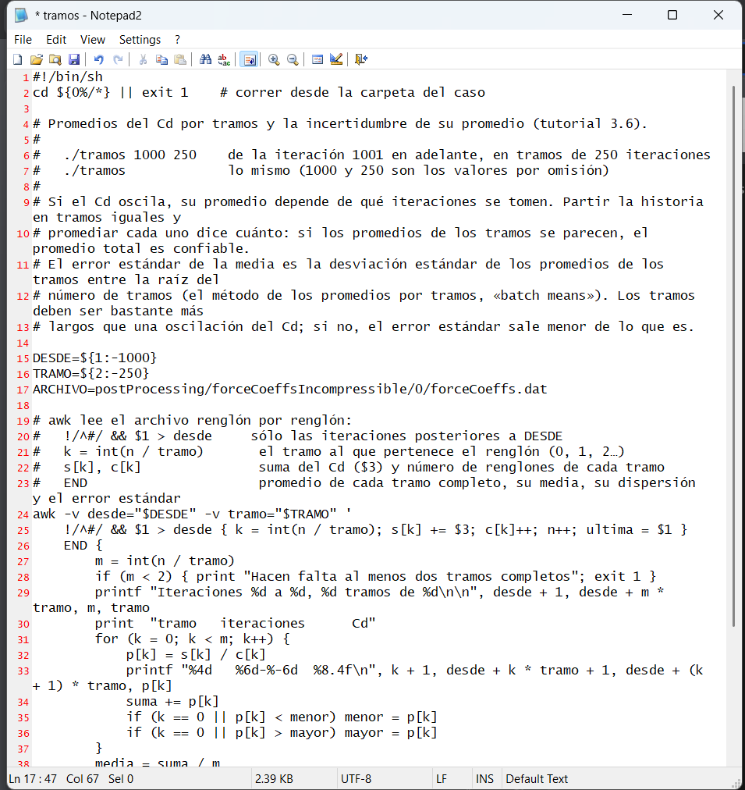

The Jimny gave Cd = 0.564 ± 0.003. That ± only says how much the number oscillates. Sixteen runs of the Jimny and the DrivAer, each changing one thing, say how much it really moves, and where.
OpenFOAM · Flujo incompresible · Tutorial 3.6
¿Cuánto vale un Cd de RANS?
El Jimny dio \(C_D\) = 0.564 ± 0.003. Ese ± sólo dice cuánto oscila el número en las últimas mil iteraciones. Dieciséis corridas del Jimny y del DrivAer, cada una con un solo cambio, dicen cuánto se mueve de verdad, y por qué.
OpenFOAM · Inkompressible Strömung · Tutorial 3.6
Was ist ein RANS-Widerstandsbeiwert wert?
Der Jimny ergab Cd = 0,564 ± 0,003. Dieses ± sagt nur, wie stark die Zahl schwankt. Sechzehn Rechnungen des Jimny und des DrivAer, jede mit einer einzigen Änderung, zeigen, wie weit sie sich wirklich bewegt.
Estimated reading: 45 minLectura estimada: 45 minLesedauer: ca. 45 minLevel: undergraduateNivel: licenciaturaNiveau: BachelorVerified on OpenFOAM 12 (blueCFD-Core 2024) and OpenFOAM 13Verificado en OpenFOAM 12 (blueCFD-Core 2024) y OpenFOAM 13Geprüft mit OpenFOAM 12 (blueCFD-Core 2024) und OpenFOAM 13
Full English translation in preparation. Each section below carries a summary of its content; the complete text, figures and tables are available in the Spanish version, which the ES button above selects.
Tell apart the sources of uncertainty of a computed drag coefficient; measure the uncertainty of an average with batch means; read a mesh study and a pressure/friction breakdown; report a Cd with an honest uncertainty.
The problem
One car, many numbers
Preparing tutorials 3.1 to 3.5 took sixteen runs. With the same physics, the Jimny gave Cd from 0.537 to 0.594 and the DrivAer from 0.263 to 0.302. Which one is the drag coefficient, and how sure can one be?
The theory
Where the uncertainty of a computed Cd comes from
Numerical errors (averaging, discretization) and modelling errors (turbulence model, wall treatment, symmetry, domain); the standard error of the mean of a correlated signal, σ√(τ/N), and the batch-means estimate.
Step by step
The average and its uncertainty: the tramos script
The tramos script splits the Cd history into equal blocks: ./tramos 1000 250 gives four block means between 0.5629 and 0.5644 and a standard error of 0.0003.
The runs
Sixteen runs, one change at a time
All sixteen runs in one table; the symmetry plane (half vehicle: 0.555 ± 0.033, oscillating; full: 0.537 ± 0.002); Cd against mesh; where along the car the runs differ.
Worked example
The uncertainty budget of the Jimny
Averaging and OpenFOAM version move Cd by less than 1 %; mesh near the wall, symmetry, schemes and tunnel boundaries by 3 to 9 %; the DrivAer lands 12 to 14 % above the tunnel. A steady RANS Cd is worth about ±10 %.
Common errors
How an uncertainty is underestimated
Blocks shorter than the slow oscillation; comparing two runs by their averages only; reading the ± of the average as the uncertainty of the result.
Suggested exercise
The Jimny with the numerics of motorBikeSteady
Run the Jimny with the fvSchemes and fvSolution of motorBikeSteady and measure, with tramos, how much the numerical method moves the drag coefficient.
Sources
References
Roache on verification and validation; Yazdani (2015) on steady and unsteady computations of the DrivAer; Heft, Indinger and Adams (2012); batch means for the error of an average.
Objetivos de aprendizaje
Qué se debe poder hacer al terminar
El tutorial 3.3 dio el coeficiente de arrastre del Jimny, \(C_D\) = 0.564 ± 0.003, y el 3.5 mostró que el mismo método pone al DrivAer 12 a 14 % por encima del túnel de viento. Esta guía junta todo lo que se corrió para preparar el bloque —dieciséis cálculos— y responde una pregunta que casi ningún tutorial hace: ¿cuánto vale ese número?
Distinguir las fuentes de incertidumbre de un \(C_D\) calculado: el promedio, la malla, el método numérico, las fronteras, el plano de simetría, el tratamiento de la pared, la versión del programa y el modelo de turbulencia.
Medir la incertidumbre de un promedio con el guion tramos, y saber cuándo la subestima.
Leer un estudio de malla y el desglose del arrastre a lo largo de un vehículo.
Reportar un \(C_D\) con una incertidumbre honesta.
Qué hace falta. El caso del Jimny ya calculado en $FOAM_RUN/jimny (tutoriales 3.1 y 3.2) y, si se quiere, el DrivAer del 3.5 en $FOAM_RUN/drivaer. La receta no calcula nada nuevo: lee las historias de fuerzas que ya están escritas. Las dieciséis corridas se hicieron al preparar el bloque; aquí se leen sus resultados.
El problema
Un vehículo, muchos números
Para preparar los tutoriales 3.1 a 3.5 se corrió el Jimny nueve veces y el DrivAer siete, en dos computadoras y con dos versiones de OpenFOAM (tabla 1, en la sección Las corridas). Todas con la misma física: aire a velocidad constante, k-ω SST estacionario con funciones de pared, suelo que se mueve y ruedas que giran. Cada corrida cambió una sola cosa respecto de otra: la malla, el tratamiento de la pared, medio vehículo o vehículo completo, los esquemas numéricos, las fronteras del túnel, la versión.
Con esos cambios, el Jimny dio \(C_D\) de 0.537 a 0.594 con mallas de un millón de celdas o más, y el DrivAer de 0.263 a 0.302. Ninguno de esos números está mal calculado: cada uno es el resultado correcto de sus decisiones. La pregunta de esta guía es cuánto se mueve el \(C_D\) con cada decisión, y qué incertidumbre hay que ponerle entonces al del Jimny.
Los dos vehículos no se comparan entre sí. El \(C_D\) del Jimny y el del DrivAer son de formas distintas. El DrivAer está aquí como pieza patrón (3.5): como su \(C_D\) se midió, dice cuánto se equivoca el método; lo que se compara es cuánto se mueve el \(C_D\) de cada uno con las mismas decisiones.
La teoría
De dónde sale la incertidumbre de un Cd calculado
Dos clases de error
Como en el 3.5, conviene separar lo que es de las ecuaciones de lo que es de cómo se resolvieron (Roache, 1998):
Errores numéricos: el cálculo no resolvió exactamente las ecuaciones que se le dieron. Aquí entran el promedio de una solución que oscila, la malla (discretización) y, en parte, los esquemas: un esquema de primer orden resuelve con más difusión numérica las mismas ecuaciones. Se reducen con más iteraciones, más celdas o mejores esquemas, y se miden con el propio cálculo.
Errores de modelo: las ecuaciones no representan exactamente el problema. Aquí entran el modelo de turbulencia, las funciones de pared, el plano de simetría (que obliga al flujo a ser simétrico), el tamaño del túnel virtual y sus condiciones de frontera. No se reducen refinando: sólo se ven al cambiar el modelo, o contra un experimento.
Un \(C_D\) calculado carga con las dos. La desviación estándar que da el guion promedios del 3.3 no mide ninguna de las dos: sólo dice cuánto oscila el número entre iteraciones.
El error de un promedio
Si las \(N\) iteraciones que se promedian fueran independientes, el error estándar del promedio sería la desviación estándar entre la raíz de \(N\):
Pero no lo son: el \(C_D\) de una iteración se parece mucho al de la anterior. El número de iteraciones que hace falta para que deje de parecerse es el tiempo integral de correlación, \(\tau = 1 + 2\sum_k \rho_k\), donde \(\rho_k\) es la correlación entre iteraciones separadas \(k\) pasos. En \(N\) iteraciones sólo hay \(N/\tau\) valores independientes, y
Con el Jimny de los tutoriales, \(\sigma\) = 0.0030, \(\tau\) ≈ 49 iteraciones y \(N\) = 1000: \(\sigma_{\bar C}\) ≈ 0.0030 × \(\sqrt{49/1000}\) = 0.0007. El promedio está determinado a la cuarta cifra.
Calcular \(\tau\) exige la correlación de la serie. Hay un camino más sencillo, el de los promedios por tramos (batch means): partir las \(N\) iteraciones en \(m\) tramos iguales, promediar cada uno y tomar la desviación estándar \(s_m\) de esos \(m\) promedios:
Si cada tramo es mucho más largo que \(\tau\), sus promedios son casi independientes y la ecuación (3) vale lo mismo que la (2). Si los tramos son cortos, no: se parecen entre sí y la ecuación (3) da un error demasiado chico. Eso es lo que hace el guion tramos, y es la razón de su segundo número.
El estudio de malla
Para el error de discretización se corre la misma receta con mallas cada vez más finas. Si el \(C_D\) deja de cambiar, la malla está resuelta para esa receta; la diferencia entre las dos mallas más finas da el orden de lo que queda. Hay métodos formales para extrapolar a una malla infinitamente fina (la extrapolación de Richardson y el índice de convergencia de malla de Roache), pero exigen mallas que se refinan por un mismo factor en todas partes; las de snappyHexMesh no lo cumplen, porque cada nivel refina sólo cerca del vehículo. Aquí se usa la diferencia directa.
Paso a paso
El promedio y su incertidumbre: el guion tramos
El guion tramos viene en jimny.zip junto a promedios y fuerzas. Si el caso se descargó antes de esta guía, basta con copiar ese archivo del .zip a la carpeta del caso. En la terminal de blueCFD-Core:
Leer el guion: cd $FOAM_RUN/jimny y abrir tramos en Notepad2. Como promedios, es una sola orden de awk con comentarios; recibe dos números, la iteración desde la que se promedia y el largo de cada tramo, y lee el mismo forceCoeffs.dat (figura 1).
Correrlo con los valores por omisión, desde la 1001 en tramos de 250: ./tramos (figura 2). Los cuatro tramos quedan dentro de una franja de 15 diezmilésimas; el error estándar, 0.0003, es del orden del de la ecuación (2), 0.0007.
Con tramos más cortos: ./tramos 1000 100 da diez tramos, entre 0.5610 y 0.5662, y un error estándar de 0.0006. En el Jimny completo, cuyo \(\tau\) es de unas 49 iteraciones, tramos de 100 todavía son bastante largos.
Con el arranque dentro: ./tramos 0 250 (figura 3). El primer tramo se sale de los demás y el error estándar se multiplica por más de cien: es la señal, ya vista en el 3.3, de que la ventana incluye el arranque.
En el DrivAer: cp ../jimny/tramos ../drivaer/, cd ../drivaer y cambiar la línea del archivo como en el 3.5 (ARCHIVO=postProcessing/forceCoeffsIncompressible/0/forceCoeffs.dat, figura 4). Con 700 iteraciones asentadas, cuatro tramos de 175:
$ ./tramos 300 175
Iteraciones 301 a 1000, 4 tramos de 175
tramo iteraciones Cd
1 301-475 0.2989
2 476-650 0.2980
3 651-825 0.2988
4 826-1000 0.2995
Promedio de los tramos 0.2988
Del menor al mayor tramo 0.2980 a 0.2995
Error estándar de la media 0.0003

Figura 1.El guion tramos. Una sola orden de awk, con sus comentarios. DESDE y TRAMO toman los dos números de la línea de órdenes (1000 y 250 si no se dan); ARCHIVO es el mismo forceCoeffs.dat que lee promedios. Cada renglón suma su \(C_D\) al tramo que le toca; al final se promedia cada tramo y se calcula la ecuación (3).

Figura 2../tramos en el Jimny. Cuatro tramos de 250 iteraciones, de la 1001 a la 2000: los cuatro promedios difieren en la cuarta cifra, y el error estándar del promedio es de tres diezmilésimas.

Figura 3.Con el arranque dentro../tramos 0 250: el primer tramo, el del arranque, da 0.88 y arrastra el promedio a 0.61; el error estándar sube a 0.039, más de cien veces el de la figura 2.

Figura 4.El guion tramos, en el DrivAer. Como con promedios en el 3.5, la única línea que cambia es la del archivo (renglón 17): la función de fuerzas del DrivAer se llama forceCoeffsIncompressible.
Qué dice y qué no dice tramos. Dice cuánto podría cambiar el promedio si se corrieran más iteraciones del mismo cálculo: el error del promedio, la primera de las fuentes de incertidumbre. No dice nada de la malla, del método ni del modelo. En el Jimny es de tres diezmilésimas; las otras fuentes, como se verá, son cien veces mayores.
Las corridas
Dieciséis corridas, un cambio a la vez
La tabla 1 reúne las dieciséis corridas. Todas las del Jimny, salvo la de los tutoriales, usan la geometría con pedestal bajo las llantas (la primera versión del 3.1); quitarlo no cambió el \(C_D\): 0.565 con pedestal y 0.564 sin él, con el mismo método.
Corrida
OpenFOAM
Celdas
Iteraciones
\(C_D\)
Jimny
medio, malla gruesa
13
235 677
501–1000
0.621 ± 0.075
medio, malla intermedia
13
825 413
1001–2000
0.538 ± 0.042
medio, malla fina
13
1 061 209
1001–2000
0.539 ± 0.038
medio, malla fina
12
1 061 331
1001–4000
0.555 ± 0.033
completo, malla fina
12
2 122 063
1001–4000
0.537 ± 0.002
desde motorBikeSteady, su método y su túnel
12
2 122 339
1001–2000
0.594 ± 0.045
+ esquemas del drivaerFastback
12
2 122 339
1001–2000
0.565 ± 0.006
+ túnel y condiciones de freestream
12
2 122 339
1001–2000
0.550 ± 0.021
el de los tutoriales 3.1–3.4
12
2 123 371
1001–2000
0.564 ± 0.003
DrivAer
tutorial, malla S
13
440 080
301–1000
0.302 ± 0.003
tutorial, malla S
12
440 139
301–1000
0.299 ± 0.003
medio, receta intermedia del Jimny
13
841 970
1001–2000
0.263 ± 0.006
medio, receta fina del Jimny
13
1 030 398
1001–2000
0.264 ± 0.006
medio, receta fina del Jimny
12
1 030 465
1001–2000
0.266 ± 0.007
medio, pared resuelta (nivel 7, 5 capas)
12
3 336 696
1001–2000
0.289 ± 0.005
completo, receta fina del Jimny (tutorial 3.5)
12
2 076 004
1001–2000
0.276 ± 0.005
Tabla 1.Las dieciséis corridas. Todas con k-ω SST estacionario, funciones de pared, suelo móvil y ruedas que giran. «Medio» es medio vehículo con plano de simetría; las celdas son las de lo que se calculó. El promedio y la desviación estándar son de las iteraciones indicadas. OpenFOAM 13 corrió en la Mac (Multipass); OpenFOAM 12, en la laptop (blueCFD-Core).
El plano de simetría
Medio vehículo con un plano de simetría en \(y\) = 0 cuesta la mitad de las celdas, y es lo que hacen muchos tutoriales. Con el Jimny, el resultado fue una solución que no se asienta (figura 5): el \(C_D\) oscila entre 0.48 y 0.68 con un periodo de cientos de iteraciones, y los promedios de mil iteraciones van de 0.549 a 0.562. El vehículo completo, con la misma receta, se queda en 0.537 ± 0.002.
Figura 5.El mismo Jimny, con y sin plano de simetría. La misma receta de malla y el mismo método, 4000 iteraciones. Con medio vehículo y un plano de simetría en y = 0, el \(C_D\) oscila lento y fuerte, sin asentarse; con el vehículo completo se queda fijo desde la iteración 1000. Las líneas discontinuas son los promedios de 1001 a 4000.
La explicación está en la estela. Detrás de un cuerpo romo, la estela no es simétrica en cada instante: se carga a un lado o al otro. Con el vehículo completo, el cálculo estacionario encuentra una solución y se queda en ella; con el plano de simetría, la estela no puede cargarse a ningún lado, y el cálculo oscila buscando una solución que la condición de frontera no permite. En el DrivAer pasó lo contrario en el número —medio auto dio 0.266 y el completo 0.276—, pero por la misma causa: la presión de la base cambia cuando la estela queda libre. El plano de simetría no sesga el \(C_D\) siempre en el mismo sentido; sólo lo cambia.
La malla
Las dos series de mallas (figura 6) dicen lo mismo: de la malla gruesa a la intermedia el \(C_D\) baja un 13 % en el Jimny y un 13 % en el DrivAer; de la intermedia a la fina, con entre un quinto y un tercio más de celdas, cambia 0.1 y 0.3 %. En el volumen —las cajas de la estela y de los bajos— la malla fina está resuelta.
Figura 6.Cd contra malla. Las corridas de medio vehículo cuentan el doble de celdas, para compararlas con las de vehículo completo. De la malla gruesa a la intermedia el \(C_D\) baja; de la intermedia a la fina casi no cambia: en el volumen, la malla está resuelta. Pero el DrivAer sube con la pared resuelta y con el vehículo completo, que no son más celdas en el volumen sino otra cosa.
Pero la corrida del DrivAer con la pared resuelta, con un nivel más en la superficie (celdas de 8 mm en lugar de 1.6 cm) y cinco capas en lugar de dos, subió el \(C_D\) de 0.266 a 0.289, un 9 %. No es una malla más fina de la misma receta: cambia la superficie, las capas y el \(y^+\) (de unos 93 a unos 32), y con ello la manera en que se calcula la capa límite.
Dónde está la diferencia
El desglose del arrastre en presión y fricción (tabla 2) dice dónde. La fricción es el 7 a 8 % del total y casi no cambia de una corrida a otra. Lo que cambia es la presión de la carrocería; y sumada de la nariz a la cola (figura 7), las tres corridas coinciden hasta \(x\) ≈ 2.4 m —el remanso de la nariz, la succión del cofre y del techo son iguales— y se separan en la cola y en la base, donde el flujo se desprende. Con el auto completo o con la pared resuelta, la base tira más hacia atrás.
Receta fina, medio auto
Pared resuelta, medio auto
Receta fina, auto completo
Carrocería, presión
0.1855
0.2057
0.2106
Carrocería, fricción
0.0196
0.0208
0.0198
Ruedas delanteras
0.0387
0.0480
0.0394
Ruedas traseras
0.0163
0.0105
0.0129
Total
0.2601
0.2849
0.2827
de él, fricción
0.0205 (8 %)
0.0215 (8 %)
0.0205 (7 %)
Tabla 2.El arrastre del DrivAer, por partes. Promedio de los campos de las iteraciones 1000, 1500 y 2000 (por eso los totales difieren unas milésimas de los de la tabla 1). La presión integra \(p\,n_x\) y la fricción, el esfuerzo cortante, sobre cada parte; los dos casos de medio auto se refieren a la mitad del área frontal.
Figura 7.Dónde se separan las corridas. El \(C_D\) de la carrocería sumado por tramos de 11 cm desde la nariz: sube con el remanso, baja con la succión del cofre y del techo, y vuelve a subir en la cola. Las tres corridas casi coinciden hasta x ≈ 2.4 m; la diferencia está en la cola y en la base, donde se desprende el flujo.
Es lo esperable: lo que un modelo RANS estacionario predice peor es el desprendimiento y la estela, y es ahí donde las decisiones del cálculo se notan. El Jimny es un cuerpo romo, con la parte trasera plana y vertical: el 99 % de su arrastre es de presión (3.3) y su \(C_D\) es más del doble del del DrivAer. Es sensible a lo mismo.
Lo que otros calcularon
El DrivAer fastback con bajos lisos se ha calculado muchas veces. La figura 8 pone los valores que se encontraron junto a los medidos y a los de esta serie. Una tesis de Chalmers hecha con Volvo (Yazdani, 2015), que reúne los publicados hasta entonces, encuentra que los cálculos del fastback se reparten en 0.054 de \(C_D\), que RANS estacionario con k-ε da 0.213, por debajo de todos los túneles, y que el cálculo no estacionario (SA-DDES, con 200 millones de celdas) predice mejor la presión de la base y la forma de la estela.
Figura 8.El DrivAer, medido y calculado. La franja va del menor al mayor valor medido en túnel que se citan para el fastback con bajos lisos; los puntos azules son cálculos publicados por otros grupos, de RANS con decenas de millones de celdas a un DDES de 200 millones; los naranjas, los de esta serie. Los cálculos publicados se reparten a los dos lados del túnel.
Nota de alcance. Salvo la tesis de Yazdani, que se leyó completa, los valores de la figura 8 vienen de páginas y artículos que citan a otros, no de las publicaciones originales; la tesis advierte, además, que los soportes del modelo en el túnel de la TU Múnich suben el \(C_D\) medido hasta cuatro milésimas, y que sus ruedas no son las del modelo de los cálculos. El túnel también tiene su incertidumbre.
Ejemplo resuelto
El presupuesto de incertidumbre del Jimny
Enunciado: con las corridas de la tabla 1, estimar cuánto puede moverse el \(C_D\) del Jimny, 0.564, por cada fuente de incertidumbre, y reportarlo con una incertidumbre total.
1. Una cosa a la vez
La tabla 3 compara pares de corridas que difieren en una sola cosa; la figura 9 lo dibuja.
Fuente
Cambio
Vehículo
Efecto en \(C_D\)
El promedio
1000 iteraciones contra su error estándar
Jimny 3.1–3.4
+0.1 %
La versión
OpenFOAM 13 → 12, misma malla
DrivAer, receta fina
+0.9 %
La malla del volumen
intermedia → fina
DrivAer, medio
+0.3 %
La malla junto a la pared
receta fina → pared resuelta
DrivAer, medio
+8.8 %
El plano de simetría
medio → completo
Jimny
−3.2 %
DrivAer
+3.9 %
Los esquemas numéricos
motorBikeSteady → drivaerFastback
Jimny
−4.9 %
Las fronteras del túnel
slip → freestream
Jimny
−2.7 %
El modelo de turbulencia
cálculo contra túnel (0.243–0.247)
DrivAer completo
+12.8 %
Tabla 3.Qué mueve el Cd. Cada renglón compara dos corridas que difieren en una sola cosa (tabla 1). El último compara el cálculo con el túnel: mezcla el modelo de turbulencia con todo lo demás.
Figura 9.Qué mueve el Cd. Cada barra compara dos corridas que difieren en una sola cosa (tabla 3). La versión de OpenFOAM, el promedio y la malla del volumen mueven el \(C_D\) menos de 1 %; la pared, el plano de simetría, los esquemas y las fronteras, de 3 a 9 %; la última barra es la distancia al túnel de viento.
Se separan en tres grupos:
Menos de 1 %: el promedio, la versión y la malla del volumen. Son las fuentes que más se discuten y las que menos pesan aquí. El promedio de mil iteraciones del Jimny completo tiene un error estándar de 0.0007; OpenFOAM 12 y 13 dan el mismo \(C_D\) del DrivAer con 0.9 % de diferencia; la malla fina en el volumen ya no cambia el resultado.
De 3 a 9 %: las decisiones del método. La pared, el plano de simetría, los esquemas numéricos y las fronteras del túnel. Ninguna de las dos opciones de cada par es un error: los esquemas del motorBikeSteady y los del drivaerFastback son de tutoriales oficiales, y slip y freestream son fronteras razonables para un túnel virtual.
Del orden de 13 %: el modelo. Con todo lo anterior fijo, el DrivAer completo queda 12 a 14 % por encima del túnel. Esa barra mezcla el modelo de turbulencia con las demás decisiones, y no se puede trasladar al Jimny: su forma es otra.
2. El Jimny con las decisiones razonables
Las corridas del Jimny completo con métodos que convergen —los esquemas del drivaerFastback, con las fronteras del motorBikeSteady o con freestream, con arranque uniforme o con potentialFoam, con pedestal o sin él— dan 0.537, 0.550, 0.564, 0.565. Su centro y su semiamplitud:
Es la incertidumbre del método: lo que se mueve el \(C_D\) del Jimny entre decisiones igual de defendibles. Con el método del motorBikeSteady, que no converge, se llega a 0.594.
3. El Jimny contra la realidad
A eso hay que sumarle lo que el método no sabe de la física, que sólo un experimento mide. El DrivAer dice que, para un auto, ese error es del orden de un décimo, y la dispersión de los cálculos publicados dice lo mismo. Si las dos incertidumbres se suponen independientes, se combinan en cuadratura:
Resultado: el \(C_D\) del Jimny con RANS estacionario es 0.551 ± 0.014 como resultado del método, y del orden de 0.55 ± 0.06 como estimación del vehículo real: entre 0.50 y 0.61. El ± 0.003 del 3.3 era sólo la oscilación; la incertidumbre de un \(C_D\) de RANS es unas veinte veces mayor, y lo que más la mueve está en la estela.
Por qué el ±10 % es una estimación. El 10 % del modelo no se midió en el Jimny: sale de un auto distinto y de la literatura. Sólo una medición del Jimny en túnel, o un cálculo con un modelo mejor para la estela, lo reduciría. Lo segundo es lo que intenta el tutorial 3.7, con un cálculo no estacionario.
Errores frecuentes
Cómo se subestima una incertidumbre
Los tres salieron al preparar el bloque.
1. Tramos más cortos que la oscilación
En el Jimny de medio vehículo, que oscila con periodos de cientos de iteraciones (figura 5), el error estándar del promedio de 1001 a 4000 depende del largo de los tramos (tabla 4): 0.0019 con tramos de 10, 0.0048 con tramos de 500. Con tramos cortos, cada tramo se parece al siguiente y la ecuación (3) da un error dos y media veces menor. La ecuación (2), con \(\tau\) = 35, da 0.0036, también menos que con tramos de 500: \(\tau\) mide la oscilación rápida, no la deriva lenta.
\(\sigma\)
\(\tau\)
Ec. (2)
Tramos de 10
Tramos de 500
Tramos de 1000
Jimny completo (3.1–3.4)
0.0030
49
0.0007
0.0003
—
—
Medio vehículo
0.0335
35
0.0036
0.0019
0.0048
0.0036
Tabla 4.La incertidumbre del promedio, por dos caminos. Iteraciones 1001 a 2000 para el Jimny de los tutoriales y 1001 a 4000 para el medio vehículo. τ es el tiempo integral de correlación del \(C_D\), en iteraciones; la columna de la ecuación (2) usa ese τ; las otras, el guion tramos con tramos del largo indicado.
Remedio: mirar la historia del \(C_D\) antes de elegir el tramo, y elegirlo más largo que la oscilación más lenta que se vea. Si al alargar los tramos el error estándar sigue creciendo, el promedio no está determinado, y hay que correr más iteraciones o cambiar algo del cálculo.
2. Comparar dos corridas por su promedio
El Jimny de medio vehículo se corrió primero en la Mac, con OpenFOAM 13: \(C_D\) = 0.539 (1001–2000). En la laptop, con OpenFOAM 12, dio 0.562 en las mismas iteraciones: un 4 % más, que parecía una diferencia entre versiones. Con 4000 iteraciones, el promedio de la laptop bajó a 0.555, y los promedios de mil iteraciones fueron 0.562, 0.554, 0.549: la diferencia cabía en la oscilación. En el DrivAer, que oscila poco, las dos versiones coinciden en 0.9 %. Remedio: comparar dos corridas sólo con la incertidumbre de cada promedio a la vista; si sus franjas se tocan, la diferencia no está probada.
3. Pocos tramos
En las 500 iteraciones de la 1501 a la 2000 no caben dos tramos de 600, y el guion lo dice en lugar de calcular:
$ ./tramos 1500 600
Hacen falta al menos dos tramos completos
Con dos o tres tramos sí calcula, pero el error estándar de la ecuación (3) es poco confiable: la desviación estándar de dos números es casi un volado. Remedio: al menos cuatro tramos, y si con tramos largos no caben, más iteraciones.
Práctica sugerida
El Jimny con el método del motorBikeSteady
¿Cuánto mueve el método numérico el \(C_D\) del Jimny?
Enunciado. Correr el Jimny con los esquemas y los solvers del motorBikeSteady, el tutorial del que salió el caso en el 3.1, y llenar la tabla 5.
Condiciones. El mismo caso, la misma malla de 2 123 371 celdas y 2000 iteraciones: unas dos horas con 8 núcleos, como en el 3.2. En otra carpeta, para no perder la corrida de referencia.
El procedimiento, en corto
Descomprimir jimny.zip otra vez y renombrar la carpeta a jimny-moto dentro de $FOAM_RUN.
cd $FOAM_RUN/jimny-moto y copiar los dos archivos del tutorial original: cp $FOAM_TUTORIALS/incompressibleFluid/motorBikeSteady/system/fvSchemes system/ y lo mismo con fvSolution. Abrirlos en Notepad2: la convección de k y ω es upwind, y el algoritmo es SIMPLEC (consistent yes) con la velocidad relajada a 0.9 y la presión sin relajar.
./Allrun y, al terminar, ./tramos y ./tramos 1000 500.
Registro de resultados
Método numérico
\(C_D\) (1001–2000)
Tramos de 250: del menor al mayor
Error estándar de la media
drivaerFastback
0.5637
0.5629 a 0.5644
0.0003
motorBikeSteady
Tabla 5.Registro de la práctica. El primer renglón es el de los tutoriales 3.1–3.4. El segundo se llena con la corrida propia; como referencia, la misma comparación hecha al preparar el caso, con las llantas sobre un pedestal (tutorial 3.1), dio 0.594 ± 0.045 con el método del motorBikeSteady y 0.565 ± 0.006 con el del drivaerFastback.
Preguntas que orientan la lectura
¿Se asienta el \(C_D\)? ¿Qué dice el error estándar al pasar de tramos de 250 a tramos de 500?
¿La diferencia con 0.564 es mayor que la incertidumbre de los dos promedios?
El método del motorBikeSteady funciona bien con la motocicleta. ¿Qué tiene el Jimny —un cuerpo romo con la parte trasera vertical— que lo vuelve sensible a la difusión numérica de upwind?
Fuentes
Referencias
Heft, A. I., Indinger, T. y Adams, N. A. (2012). Introduction of a new realistic generic car model for aerodynamic investigations (SAE Technical Paper 2012-01-0168). SAE International.
Law, A. M. (2015). Simulation modeling and analysis (5.ª ed.). McGraw-Hill. (El método de los promedios por tramos.)
Oberkampf, W. L. y Roy, C. J. (2010). Verification and validation in scientific computing. Cambridge University Press.
Roache, P. J. (1998). Verification and validation in computational science and engineering. Hermosa Publishers.
Yazdani, R. (2015). Steady and unsteady numerical analysis of the DrivAer model (tesis de maestría 2015:34). Chalmers University of Technology. https://publications.lib.chalmers.se/records/fulltext/219217/219217.pdf
Las capturas son del ensayo del vídeo de esta guía. Las cifras son de las corridas hechas para preparar el bloque 3, del 12 al 15 de octubre de 2026: en la Mac, OpenFOAM 13 en una máquina virtual Multipass; en la laptop, blueCFD-Core 2024 (OpenFOAM 12) con 6 u 8 procesos.
Lernziele
Was Sie danach können sollten
Vollständige deutsche Übersetzung in Vorbereitung. Jeder Abschnitt enthält eine Zusammenfassung; der vollständige Text mit Abbildungen und Tabellen liegt in der spanischen Fassung vor, die über die Schaltfläche ES oben erreichbar ist.
Die Unsicherheitsquellen eines berechneten Widerstandsbeiwerts unterscheiden; die Unsicherheit eines Mittelwerts mit Blockmitteln messen; eine Netzstudie und eine Druck-/Reibungsaufteilung lesen; einen Cd mit ehrlicher Unsicherheit angeben.
Das Problem
Ein Fahrzeug, viele Zahlen
Für die Tutorials 3.1 bis 3.5 waren sechzehn Rechnungen nötig. Mit derselben Physik ergab der Jimny Cd-Werte zwischen 0,537 und 0,594. Welcher ist der Widerstandsbeiwert, und wie sicher ist er?
Die Theorie
Woher die Unsicherheit eines berechneten Cd kommt
Numerische Fehler (Mittelung, Diskretisierung) und Modellfehler (Turbulenzmodell, Wandbehandlung, Symmetrie, Gebiet); der Standardfehler des Mittelwerts eines korrelierten Signals, σ√(τ/N), und die Blockmittel.
Schritt für Schritt
Der Mittelwert und seine Unsicherheit: das Skript tramos
Das Skript tramos teilt den Cd-Verlauf in gleiche Blöcke: ./tramos 1000 250 ergibt vier Blockmittel zwischen 0,5629 und 0,5644 und einen Standardfehler von 0,0003.
Die Rechnungen
Sechzehn Rechnungen, eine Änderung nach der anderen
Alle sechzehn Rechnungen in einer Tabelle; die Symmetrieebene (halbes Fahrzeug: 0,555 ± 0,033, schwankend; ganzes: 0,537 ± 0,002); Cd über dem Netz; wo entlang des Autos sich die Rechnungen unterscheiden.
Durchgerechnetes Beispiel
Das Unsicherheitsbudget des Jimny
Mittelung und OpenFOAM-Version ändern Cd um weniger als 1 %; Wandnetz, Symmetrie, Schemata und Kanalränder um 3 bis 9 %; der DrivAer liegt 12 bis 14 % über dem Windkanal. Ein stationärer RANS-Cd ist etwa ±10 % wert.
Häufige Fehler
Wie eine Unsicherheit unterschätzt wird
Blöcke kürzer als die langsame Schwingung; zwei Rechnungen nur über ihre Mittelwerte vergleichen; das ± des Mittelwerts als Unsicherheit des Ergebnisses lesen.
Übungsvorschlag
Der Jimny mit dem Verfahren von motorBikeSteady
Den Jimny mit fvSchemes und fvSolution von motorBikeSteady rechnen und mit tramos messen, wie stark das numerische Verfahren den Widerstandsbeiwert verschiebt.
Quellen
Literatur
Roache zu Verifikation und Validierung; Yazdani (2015) zu stationären und instationären Rechnungen des DrivAer; Heft, Indinger und Adams (2012); Blockmittel für den Fehler eines Mittelwerts.